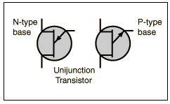
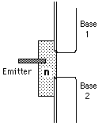

| 
The characteristic curve for the UJT shows a negative resistance region. A common use of the device is to make a relaxation oscillator.
|
An n-type unijunction transistor (left symbol) is made by implanting a small p-type emitter probe in a bar of n-type silicon. The emitter probe is offset from the center of the bar and there are two bases as shown below.

|